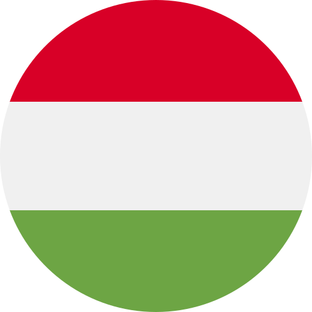

Dusan Kunovac
Consultant and SQL Developer at Profitour s.r.o.
Work Experience
Skills
.png "HTML")

Consultant / SQL Developer
Profitour s.r.o.
August 2019 – Present
Key responsibilities:
- programming stored procedures and report templates in MS SQL based on customer requests
- reservation system training for tour operators (Train the Trainee)
- request system administration
- general professional consultancy in tourism
- product and sales process improvement meetings
- analysis of user environment problems
Reservations specialist
Go Global Travel
September 2018 – July 2019
Key responsibilities:
- providing personalized customer service in a call center environment
- working in conjunction with the sales team in order to gain new clients and drive sales
- communicating with the clients (travel agencies) and the providers (wholesalers, hotels)
- receiving and solving all amendments, cancellations, special requests and complaints
- dealing with emergency phone cases
Product specialist
Pelicantravel.com s.r.o.
October 2016 – June 2018
Key responsibilities:
- responsibility for products (travel packages, holidays etc.)
- seeking for new partners (hotels, local travel agencies)
- tracking trends and competitors in tourism on the domestic market, tracking offers of foreign websites dedicated to tourism industry
- participation in regular reporting meetings
- translation of texts on the company's website
After Sales Assistant
Techtronic Industries Hungary Kft.
March 2016-July 2016
Key responsibilities:
- provide technical and administrative help to service partners, distributors via email and phone
- monitor frequent quality failures and to give signal of such cases to European quality management
- meet warranty cost budgets, by monthly monitoring warranty cost by servicepartners
- prepare monthly/quarterly report statistics and analysis by extensive usage of excel gatheringdata
Customer Service Assistant
Techtronic Industries Hungary Kft.
November 2015 – February 2016
Key responsibilities:
- processing and confirmation of orders and their follow-up
- support of sales representatives, salesmanagement, marketing and finance department
- controlling of product availability in stock
- communication with business partners and CEE warehouse in Germany
Summer Jobs
- 3x at Munich Airport
- 1x Summer Camp in the US
Volunteering
- participation in organizing cultural and sporting events for The youth Organisation of Slovaks in Hungary
Language skills
 - native
- native

- native
 - intermediate
- intermediate
 - intermediate
- intermediate
Education
Constantine the Philosopher University, Faculty of Arts, Nitra (Slovakia)
Culture and Tourism Management, 2009-2015
Slovak Secondary School, Bekescsaba (Hungary)
school leaving exam, 2005-2009